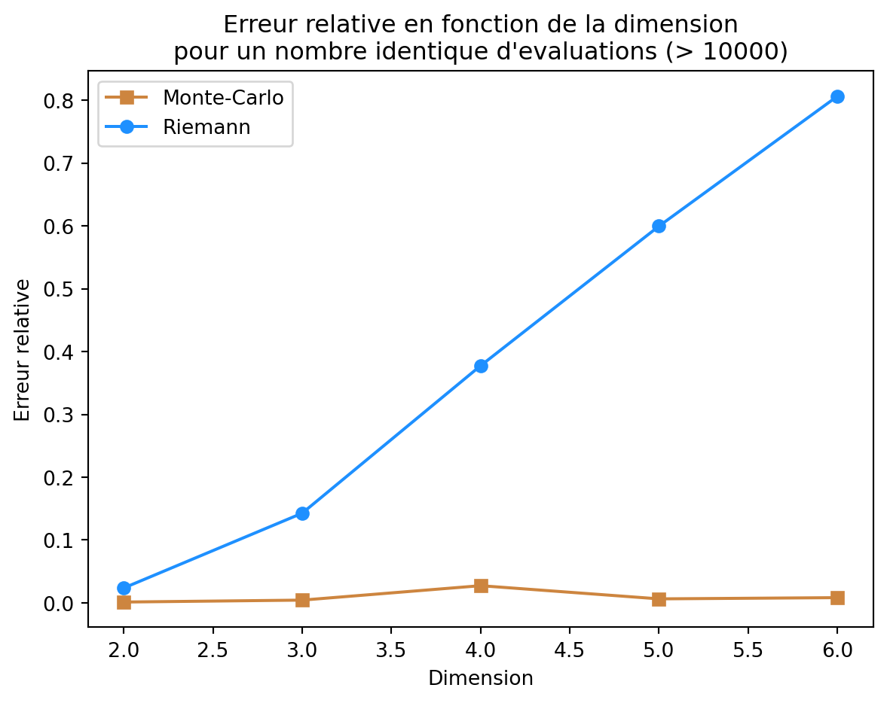
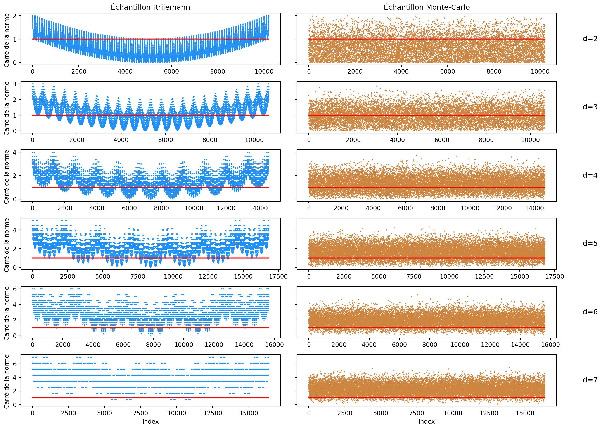
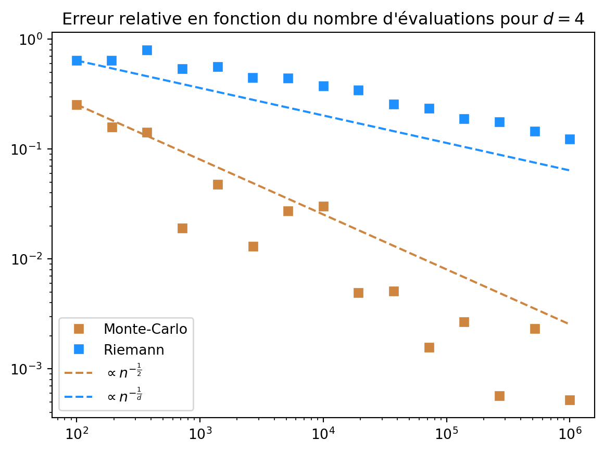

import numpy as np
from scipy import stats
from scipy.special import gamma
def f(x):
return np.sum(x**2) <= 1
def true_volume(d):
return np.pi**(d/2) / gamma(d/2 + 1)
def riemann(n, d):
n_discr = int(n**(1/d))
n_eff = n_discr**d
x = np.linspace(-1, 1, n_discr)
# Grille regulière sur [-1, 1]^d:
X = np.array(np.meshgrid(*[x]*d)).reshape(d, -1).T
Y = np.array([f(x) for x in X]) * 1.0
d_vol = (2 / n_discr)**d
return np.sum(Y) * d_vol, n_eff, X
{{
}}
Objectifs de ce TP
- Implémenter des méthode de Mont-Carlo simple pour calculer des intégrales
- Calculer des intervalles de confiances pour évaluer la précision des estimateurs
Approximation de \pi
Implémenter la méthode de Monte-Carlo pour le calcul approché de \pi via les deux intégrales suivantes :
- pour X de loi uniforme sur [0,1] I_1= 4 \cdot \int_0^1 \sqrt{1-x^2} dx=\pi=4 \cdot \mathbb{E}\left[\sqrt{1-X^2} \right], La formule précédent s’obtient en faisant le changement de variable x=\sin(t).
- pour (X,Y) de loi uniforme sur [-1,1]^2 I_2= \int_{\mathbb R^2} {1\hspace{-3.8pt} 1}_{\{ x^2+ y^2 \leq 1\}} dx dy=\pi=\mathbb{E}[4{1\hspace{-3.8pt} 1}_{\{X^2+Y^2\leq 1\}}].
- Quelle méthode donne la meilleure précision ?
Loi de Cauchy
On souhaite estimer la probabilité qu’une variable aléatoire X \sim \text{Cauchy}(0, 1) soit plus grande que 2, i.e., I = \mathbb P(X\geq 2) = \int_2^\infty \left\{ \pi (1 + x^2) \right\}^{-1} \text{d$x$} = - \frac{\arctan 2}{\pi} + \frac{1}{2}
- Évaluer avec
Pythonla valeur exacte de l’intégrale.
- Implémenter l’estimateur de Monte-Carlo simple à base de loi de Cauchy pour cette intégrale.
- Implémenter l’estimateur de Monte-Carlo antithétique basé sur la symétrie de la loi de Cauchy.
- Implémenter l’estimateur de Monte-Carlo à base de loi uniforme sur [0,2] en utilisant la relation I = \frac{1}{2} - \mathbb{E}\left[ \frac{2}{\pi (1 + Y^2)} \right], \quad Y {\sim} U[0,2].
- Implémenter l’estimateur de Monte-Carlo à base de loi uniforme sur [0,1/2] en utilisant la relation I = \mathbb{E}\left[\frac{1}{2\pi (1 + Z^2)} \right], \quad Z {\sim} U[0,1/2].
- Quelle méthode d’estimation est la plus précise ?
Aiguilles de Buffon
- Implémentez l’estimateur Monte-Carlo de \pi de la méthode de Buffon : \pi^{-1} = \frac{1}{2 }\mathbb{E}[{1\hspace{-3.8pt} 1}_{\cos\Theta \geq 2 X}], avec (X,\Theta)\sim U([0,1/2]\times[-\pi/2,\pi/2]).
- Combien de tirages sont nécessaire pour obtenir une précision de 10^{-2} avec 95\% de certitude ?
Probabilités de dépassement d’une loi normale
Soit Z \sim N(0,1). Nous souhaitons évaluer la probabilité I = \mathbb P(Z >4.5).
- Implémentez la méthode de Monte-Carlo standard pour ce calcul. Que constatez-vous ? Pourquoi ?
Pour aller plus loin: volume de la boule unité
L’objectif de cet exercice est d’illustrer la difficulté de l’estimation de volumes en grande dimension, notamment par la méthode de Riemann.
On note B_d=\{x\in \mathbb R^d, \sum_{i=1}^d x_i^2 \leq 1\} la boule unité en dimension d et V_d son volume. Pour rappel un calcul exact donne V_d = \frac{\pi^{d/2}}{\Gamma(d/2+1)}. En notant f(\cdot) = {1\hspace{-3.8pt} 1}_{B_d}(\cdot) on peut donc écrire V_d = \int_{\mathbb{R}^d} f(x)dx.
On va dans la suite estimer V_d pour des valeurs de d allant de 2 à 10.
- Implémentez la méthode de Riemann pour approcher V_d pour d=2,\dots, 10 par \widehat{V}_d^{\mathrm{Riemann}}.
- Implémentez la méthode de Monte-Carlo standard pour ce même calcul pour approcher V_d par \widehat{V}_d^{\mathrm{Monte-Carlo}}. Visualizer l’erreur relative des deux méthodes en fonction de d (pour un nombre d’évaluation de f identique, et supérieur à 10000. Que constatez-vous ? Pourquoi ? Pour rappel l’erreur relative d’un esimtateur \widehat{V}_d de V_d est donnée par |\widehat{V}_d - V_d|/V_d.
import matplotlib.pyplot as plt
n = 10000
rel_err_mcs = []
rel_err_rs = []
d_max = 7
for d in range(2, d_max):
in_r, n_eff, X = riemann(n, d)
in_mc, ic_mc, norms_mc = montecarlo(n_eff, d) # même nombre d'évaluations
rel_err_mc = np.abs(in_mc - true_volume(d)) / true_volume(d)
rel_err_r = np.abs(in_r - true_volume(d)) / true_volume(d)
rel_err_mcs.append(rel_err_mc)
rel_err_rs.append(rel_err_r)
fig, ax = plt.subplots()
ax.plot(range(2, d_max), rel_err_mcs, marker="s", label="Monte-Carlo",color='peru')
ax.plot(range(2, d_max), rel_err_rs, marker="o", label="Riemann", color='dodgerblue')
ax.set_xlabel("Dimension")
ax.set_ylabel("Erreur relative")
ax.set_title(f"Erreur relative en fonction de la dimension\npour un nombre identique d'evaluations (> {n})")
ax.legend()
plt.show()
- Quelle méthode est la plus précise ? Pourquoi ? On pourra visualiser la norme des échantillons de la méthode de Monte-Carlo pour différentes dimensions de ceux de la méthode de Riemann.
d_max=7
d_min=2
n=10000
fig, ax = plt.subplots(d_max - d_min + 1, 2, figsize=(8, 12), sharey='row')
for i, d in enumerate(range(d_min, d_max + 1)):
_, n_eff, X = riemann(n, d)
norms_r = np.sum(X**2, axis=1)
_, _, norms_mc = montecarlo(n_eff, d)
for j, norms, title, color in zip(range(2), [norms_r, norms_mc], ["Tirages réguliers", "Tirages MC"], ['dodgerblue', 'peru']):
ax[i, j].scatter(range(n_eff), norms, label=title, color=color, alpha=1, s=0.8)
ax[i, j].plot(range(n_eff), [1]*n_eff, label="1", color='red')
ax[i, j].set_ylabel("Carré de la norme ")
ax[i, 1].text(1.1, 0.5, f"d={d}", transform=ax[i, 1].transAxes, fontsize=12, verticalalignment='center')
ax[0, 0].set_title("Échantillon Riemann")
ax[0, 1].set_title("Échantillon Monte-Carlo")
ax[-1, 0].set_xlabel("Index")
ax[-1, 1].set_xlabel("Index")
plt.tight_layout()
plt.show()
Une limite des deux méthodes est la dimension. Regardons ce que donne la méthode de Riemann quand d varie.
Notons a=(a_1,\dots,a_d)^\top et b=(b_1,\dots,b_d)^\top deux points de \mathbb{R}^d. Tout d’abord supposons que donnons nous une fonction f:\mathbb{R}^d \to \mathbb{R}, et un hyper-rectangle \Omega=\prod_{j=1}^d [a_j, b_j] (avec b_j>a_j pour tout j\in\llbracket 1, d\rrbracket)sur lequel on veut calculer l’intégrale de f. Ainsi l’objectif est de calculer \int_{\Omega} f(x)dx.
Nous rajoutons l’hypothèse suivante: f est Lipschitzienne sur \Omega de constante L_{f} pour la norme \|\cdot\|_{\infty} (le max des amplitudes des coefficients), ainsi il existe L_f tel que pour
\forall (x, y) \in \Omega^2, \quad |f(x) - f(y)| \leq L_f \|x-y\|_{\infty} \enspace.
Pour cela on discrétise l’hyper-rectangle \Omega en m sous-intervalles de taille (b_i-a_i)/m pour i=1,\dots,d, ce qui forme une partition de n=m^d hyper-rectangles de \Omega: \Omega_{i_1,\dots,i_d} = \prod_{j=1}^d \left[a_j + \tfrac{i_j-1}{m}(b_j-a_j), a_j + \tfrac{i_j}{m}(b_j-a_j)\right]. et on a alors la partition: \Omega = \bigcup_{i_1=1}^m \cdots \bigcup_{i_d=1}^m \Omega_{i_1,\dots,i_d}. Pour simplifier on note
\mathrm{Vol}(\Omega_{i_1,\dots,i_d}) = \left(\tfrac{b_1-a_1}{m}\right) \cdots \left(\tfrac{b_d-a_d}{m}\right)= \frac{1}{m^d}\prod_{j=1}^d (b_{i_j}-a_{i_j}) \enspace. Pour tout i_1,\dots,i_d, on note \omega_{i_1,\dots,i_d} un point de \Omega_{i_1,\dots,i_d} (par exemple son centre, ou par simplicité le point “en bas à gauche de chaque hyper-rectangle”).
L’estimateur de l’intégrale de f sur \Omega par la méthode de Riemann est alors:
\widehat{I}^{\mathrm{R}} = \sum_{i_1=1}^m \cdots \sum_{i_d=1}^m f(\omega_{i_1,\dots,i_d}) \mathrm{Vol}(\Omega_{i_1,\dots,i_d}) \enspace, qui requiert n=m^d évaluations de f.
Notons E l’erreur de la méthode de Riemann, est donnée par E^R = |\int_{\Omega} f(x)dx - \widehat{I}^{\mathrm{R}}|, et on alors:
\begin{align*} E^R & = \left|\int_{\Omega} f(x)dx - \sum_{i_1=1}^m \cdots \sum_{i_d=1}^m f(\omega_{i_1,\dots,i_d}) \mathrm{Vol}(\Omega_{i_1,\dots,i_d}) \right| \\ & = \left|\sum_{i_1=1}^m \cdots \sum_{i_d=1}^m \int_{{\Omega}_{i_1,\dots,i_d}} \left( f(x) - f(\omega_{i_1,\dots,i_d}) \right) dx \right| \\ & \leq \sum_{i_1=1}^m \cdots \sum_{i_d=1}^m \int_{{\Omega}_{i_1,\dots,i_d}} \left| f(x) - f(\omega_{i_1,\dots,i_d}) \right| dx \\ & \leq \sum_{i_1=1}^m \cdots \sum_{i_d=1}^m \int_{{\Omega}_{i_1,\dots,i_d}} L_f \|x - \omega_{i_1,\dots,i_d}\|_{\infty} dx \\ & = L_f \sum_{i_1=1}^m \cdots \sum_{i_d=1}^m \int_{{\Omega}_{i_1,\dots,i_d}} \|x - \omega_{i_1,\dots,i_d}\|_{\infty} dx \enspace. \end{align*}
Pour x\in \Omega_{i_1,\dots,i_d}, alors \|x-\omega_{i_1,\dots,i_d}\|_{\infty} \leq \max_{j = 1,\dots, d}\tfrac{b_j-a_j}{m}=\tfrac{1}{m}\|b-a\|_{\infty}, et donc:
\begin{align*} E^R & = L_f \sum_{i_1=1}^m \cdots \sum_{i_d=1}^m \int_{{\Omega}_{i_1,\dots,i_d}} \tfrac{1}{m}\|b-a\|_{\infty} dx \\ & \leq L_f\mathrm{Vol}(\Omega) \tfrac{1}{m}\|b-a\|_{\infty} \\ & \leq \frac{L_f\mathrm{Vol}(\Omega)\|b-a\|_{\infty}}{n^{\tfrac{1}{d}}} \enspace. \end{align*}
Ainsi pour atteindre un niveau de précision \epsilon, il faut n tel que:
n \geq \left(\frac{L_f\mathrm{Vol}(\Omega)\|b-a\|_{\infty}}{\epsilon}\right)^d \enspace.
Concernant la méthode de Monte-Carlo l’estimateur est donnée par: \widehat{I}^{\mathrm{MC}} = \frac{1}{n}\sum_{i=1}^n f(X_i) \enspace, et le théorème centrale limite assure que \sqrt{n}\left(\widehat{I}^{\mathrm{MC}} - \int_{\Omega} f(x)dx\right) \overset{d}{\longrightarrow} \mathcal{N}(0, \mathrm{Var}(f(X))) \enspace. Cela donne donc une erreur de l’ordre de \frac{1}{\sqrt{n}} pour la méthode de Monte-Carlo.
On peut confirmer ces vitesses d’approximation en regardant les erreurs relatives en fonction du nombre d’évaluations pour d=4, pour la fonction indicatrice de la boule unité:
d = 4
fig, ax = plt.subplots(figsize=(7, 5))
n_list = np.logspace(2, 6, 15).astype(int)
true_vol = true_volume(d)
n_list_r = n_list**(1/d)
n_list_r = (n_list_r**d).astype(int)
rel_err_mc = []
rel_err_r = []
for n, n_r in zip(n_list, n_list_r):
in_mc, _, _ = montecarlo(n, d)
in_r, _, _ = riemann(n_r, d)
rel_err_mc.append(np.abs(in_mc - true_vol) / true_vol)
rel_err_r.append(np.abs(in_r - true_vol) / true_vol)
ax.plot(n_list, rel_err_mc, marker="s", color='peru', linestyle='')
ax.plot(n_list_r, rel_err_r, marker="s", color='dodgerblue', linestyle='')
ax.set_yscale('log')
ax.set_xscale('log')
ax.plot(n_list, rel_err_mc[0] * np.sqrt(n_list[0] / n_list), label=r"$\propto n^{-\frac{1}{2}}}$", color='peru', linestyle='--')
ax.plot(n_list_r, rel_err_r[0] * (n_list_r[0] / n_list_r)**(1/d), label=r"$\propto n^{-\frac{1}{d}}}$", color='dodgerblue', linestyle='--')
plt.title(f"Erreur relative en fonction du nombre d'évaluations pour $d={d}$")
plt.legend(["Monte-Carlo", "Riemann", r"$\propto n^{-\frac{1}{2}}$", r"$\propto n^{-\frac{1}{d}}$"], loc='lower left')
plt.show()
Notons que la vitesse d’approximation prévue par la théorie est conforme à ce que l’on observe même si la fonction indicatrice de la boule unité n’est pas Lipschitzienne.